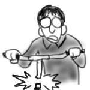
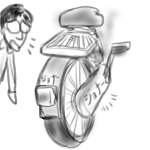
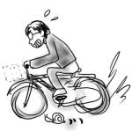
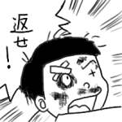
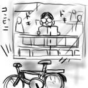

たくなる号名鑑
たくなる号(初代)

登場時期：高校時代〜大学1年まで
経歴：高校時代はほとんど使用されなかったが、大学入学と同時にうどん国から味噌国へ輸送。新しい地を探索する重要な足として活躍を開始。走行する度に一個ずつパーツが剥離していき、ついにはハンドルが根元から折れた。廃品。
ニューたくなる号
登場時期：大学2年〜3年
経歴：廃品になったたくなる号(初代)に換わるものとしてダイエーで1万円で購入。主に通学手段として活躍。走行する度にたてつけが悪くなり、カゴがガタガタ揺れるようになったあたりで盗難された。
たくなる号アザーズ
登場時期：大学4年
経歴：ニューたくなる号の盗難に同情した大家さんから自転車置き場に無断駐輪されていた自転車を贈呈された。明日から自由に使っていいよと解錠されたが翌朝消失。一日の命。
たくなる号ジョナー

登場時期：大学4年
経歴：さらに同情した大家さんが、娘さんがかなり昔に使用していた子供向け自転車を貸与してくれた。赤いボディーに「ジョナー」の白文字が映える。タイヤ直径が小さいため速度は出ないが小回りが利く。あとチョッピリ恥ずかしい。
帰ってきたニューたくなる号

登場時期：大学4年〜大学院1年
経歴：なんとニューたくなる号が帰ってきた！ブレーキレバーがブラブラだが快適な足回り。主にバイトへの通勤で活躍。走行する度にたてつけが悪くなり、かねてより不安のあったカゴが剥離。それにも負けずブレーキワイヤーの切断などのトラブルから奇跡の復活を続けた。しかし、ついには漕いでも前に進まなくなったので引退。
たくなる号アザーズ -HEAVY UNIT-
登場時期：大学院1年〜大学院2年
経歴：大学院を卒業し、大阪へ引っ越しする先輩から譲渡。最初からカゴ無し。だが6段切り替えのシルバーボディが夜の街を駆ける！譲渡一日目にしていきなり職質。説明に困る。後輪と後輪カバーがズレてたりするものの、CDの買い出しなどに活躍。漕いでも前に進まなくなったので破棄(また)。
岩槻たくなる号

登場時期：入社1年目
経歴：入社後、舞台を新たにして心機一転登場！駅前で盗難。
岩槻たくなる号リターンズ
登場時期：入社1年目
経歴：なんと岩槻たくなる号が帰ってきた！でも、すぐにアパートの駐輪場で盗難。
岩槻たくなる号フォーエバー
登場時期：入社1年目〜入社2年目
経歴：なんと岩槻たくなる号が帰ってきた！(盗難当日に(参照:日記99.11.13))。でも駅前で盗難。
折り畳みたくなる号

登場時期：入社2年目〜現在
経歴：同期が自社ホームページのプレゼントに身分を隠して応募し、見事折り畳み自転車をゲット！でも使わないというから安く譲ってもらった。常に折りたたまれて玄関に鎮座。一度コンビニへ乗っていったが、チェーンロックがないので盗難が怖くて買い物どころではなかった。要チェーンロック。